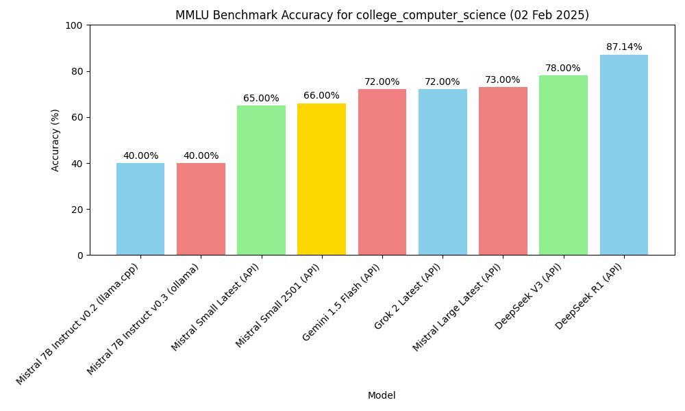

مقياس MMLU | أصلي، ترجم بواسطة AI
مقدمة
يقدّم هذا المنشور تقييم لنموذج لغة باستخدام معيار MMLU (فهم لغة متعددة المهام الضخمة).
يكون معيار MMLU اختبار شامل للمودل على قدرته على تنفيذ مجموعة متنوعة من المهام عبر مجموعة واسعة من الموضوعات. ويحتوي على أسئلة متعددة الاختيار تغطي مجالات متنوعة مثل الرياضيات، التاريخ، القانون، والطب.
روابط البيانات:
llama-server
للتشغيل llama-server:
build/bin/llama-server -m models/7B/mistral-7b-instruct-v0.2.Q4_K_M.gguf --port 8080
معيار MMLU
يحكم هذا السكريبت على معيار MMLU باستخدام ثلاثة خلفيات مختلفة: ollama, llama-server, وdeepseek.
للتشغيل الشفرة الخاصة بمقياس MMLU:
import torch
from datasets import load_dataset
import requests
import json
from tqdm import tqdm
import argparse
import os
from openai import OpenAI
from dotenv import load_dotenv
import time
import random
load_dotenv()
# إعداد التحليل النصي
parser = argparse.ArgumentParser(description="تقييم مجموعة بيانات MMLU باستخدام خلفيات مختلفة.")
parser.add_argument("--type", type=str, default="ollama", choices=["ollama", "llama", "deepseek", "gemini", "mistral"], help="نوع الخلفية: ollama, llama, deepseek, gemini أو mistral")
parser.add_argument("--model", type=str, default="", help="اسم النموذج")
args = parser.parse_args()
# تحميل مجموعة بيانات MMLU
subject = "college_computer_science" # اختيار الموضوع
dataset = load_dataset("cais/mmlu", subject, split="test")
# تنسيق التوصية مع مثال واحد
def format_mmlu_prompt(example):
prompt = f"سؤال: {example['question']}\n"
prompt += "الاختيارات:\n"
for i, choice in enumerate(example['choices']):
prompt += f"{chr(ord('A') + i)}. {choice}\n"
prompt += "أعط إجابتك. أعط الاختيار فقط.\n"
return prompt
# تهيئة عميل DeepSeek إذا لزم الأمر
def initialize_deepseek_client():
api_key = os.environ.get("DEEPSEEK_API_KEY")
if not api_key:
print("خطأ: لم يتم تعيين المتغير البيئي DEEPSEEK_API_KEY.")
exit()
return OpenAI(api_key=api_key, base_url="https://api.deepseek.com")
def call_gemini_api(prompt, retries=3, backoff_factor=1):
gemini_api_key = os.environ.get("GEMINI_API_KEY")
if not gemini_api_key:
print("خطأ: لم يتم تعيين المتغير البيئي GEMINI_API_KEY.")
exit()
url = f"https://generativelanguage.googleapis.com/v1beta/models/gemini-1.5-flash:generateContent"
params = {"key": gemini_api_key}
payload = {"contents": [{"parts": [{"text": prompt}]}]}
print(f"دخول إلى API Gemini: {payload}")
for attempt in range(retries):
response = requests.post(url, json=payload, params=params)
response_json = response.json()
print(response_json)
if response.status_code == 200:
return response_json
elif response.status_code == 429:
time.sleep(backoff_factor * (2 ** attempt)) # الانسحاب التدرجة
else:
raise Exception(f"خطأ في API Gemini: {response.status_code} - {response_json}")
return None
def call_mistral_api(prompt, model="mistral-small-2501", process_response=True):
api_key = os.environ.get("MISTRAL_API_KEY")
if not api_key:
print("خطأ: لم يتم تعيين المتغير البيئي MISTRAL_API_KEY.")
return None
url = "https://api.mistral.ai/v1/chat/completions"
headers = {
"Content-Type": "application/json",
"Accept": "application/json",
"Authorization": f"Bearer {api_key}"
}
data = {
"model": model,
"messages": [
{
"role": "user",
"content": prompt
}
]
}
print(f"دخول إلى API Mistral: {data}")
print(f"URL API Mistral: {url}")
print(f"عنوانات API Mistral: {headers}")
try:
response = requests.post(url, headers=headers, json=data)
response.raise_for_status()
response_json = response.json()
print(response_json)
if response_json and response_json['choices']:
content = response_json['choices'][0]['message']['content']
if process_response:
return process_mistral_response(content)
else:
return content
else:
print(f"خطأ في API Mistral: صيغة الرد غير صالحة: {response_json}")
return None
except requests.exceptions.RequestException as e:
print(f"خطأ في API Mistral: {e}")
stre = f"{e}"
if '429' in stre:
# print(f"Response status code: {e.response.status_code}")
# print(f"Response content: {e.response.text}")
print("طلبات كثيرة جدًا، نأمل 10 ثوانٍ ومراجعة")
time.sleep(10)
return call_mistral_api(prompt, model, process_response)
raise e
import re
def process_ollama_response(response):
if response.status_code == 200:
print(f"الخروج من API: {response.json()}")
output_text = response.json()["choices"][0]["message"]["content"]
match = re.search(r"Answer:\s*([A-D])", output_text, re.IGNORECASE)
if not match:
match = re.search(r"\*\*Answer\*\*:\s*([A-D])", output_text, re.IGNORECASE)
if not match:
match = re.search(r"The correct answer is\s*([A-D])", output_text, re.IGNORECASE)
if not match:
match = re.search(r"The correct choice is\s*([A-D])", output_text, re.IGNORECASE)
if not match:
match = re.search(r"The correct choice would be\s*([A-D])", output_text, re.IGNORECASE)
if not match:
match = re.search(r"The answer is\s*([A-D])", output_text, re.IGNORECASE)
if not match:
match = re.search(r"The answer appears to be\s*([A-D])", output_text, re.IGNORECASE)
if not match:
match = re.search(r"The correct answer should be\s*([A-D])", output_text, re.IGNORECASE)
if not match:
match = re.search(r"The correct answer would be\s*([A-D])", output_text, re.IGNORECASE)
if match:
predicted_answer = match.group(1).upper()
else:
stripped_output = output_text.strip()
if len(stripped_output) > 0:
first_word = stripped_output.split(" ")[0]
if len(first_word) == 1:
predicted_answer = first_word
else:
first_word_comma = stripped_output.split(",")[0]
if len(first_word_comma) == 1:
predicted_answer = first_word_comma
else:
first_word_period = stripped_output.split(".")[0]
if len(first_word_period) == 1:
predicted_answer = first_word_period
else:
print(f"لم يمكن استخراج إجابة حرف واحد من الخروج: {output_text}, إعادة إجابة عشوائية")
predicted_answer = random.choice(["A", "B", "C", "D"])
else:
predicted_answer = ""
return predicted_answer
else:
print(f"خطأ: {response.status_code} - {response.text}")
return ""
def process_llama_response(response):
if response.status_code == 200:
output_text = response.json()["choices"][0]["message"]["content"]
predicted_answer = output_text.strip()[0] if len(output_text.strip()) > 0 else ""
print(f"الخروج من API: {output_text}")
return predicted_answer
else:
print(f"خطأ: {response.status_code} - {response.text}")
return ""
def process_deepseek_response(client, prompt, model="deepseek-chat", retries=3, backoff_factor=1):
print(f"دخول إلى API Deepseek: {prompt}")
for attempt in range(retries):
try:
response = client.chat.completions.create(
model=model,
messages=[
{"role": "user", "content": prompt}
],
max_tokens=100
)
if response and response.choices:
output_text = response.choices[0].message.content.strip()
predicted_answer = output_text.strip()[0] if len(output_text.strip()) > 0 else ""
print(f"الخروج من API: {output_text}")
return predicted_answer
else:
print("خطأ: لا يوجد رد من API.")
return ""
except Exception as e:
if "502" in str(e):
print(f"خطأ البوابة السيئة (502) أثناء مكالمة API، إعادة المحاولة في {backoff_factor * (2 ** attempt)} ثانية...")
time.sleep(backoff_factor * (2 ** attempt))
else:
print(f"خطأ أثناء مكالمة API: {e}")
return ""
return ""
def process_mistral_response(response):
if response:
output_text = response.strip()
predicted_answer = output_text.strip()[0] if len(output_text.strip()) > 0 else ""
print(f"الخروج من API: {output_text}")
return predicted_answer
else:
print("خطأ: لا يوجد رد من API Mistral")
return ""
def process_gemini_response(prompt):
json_response = call_gemini_api(prompt)
if not json_response:
print("لا يوجد رد من API Gemini بعد المحاولات.")
return ""
if 'candidates' not in json_response or not json_response['candidates']:
print("لا يوجد مرشحين موجودون في الرد، إعادة المحاولة...")
json_response = call_gemini_api(prompt)
print(json_response)
if not json_response or 'candidates' not in json_response or not json_response['candidates']:
print("لا يوجد مرشحين موجودون في الرد بعد المحاولة.")
return ""
first_candidate = json_response['candidates'][0]
if 'content' in first_candidate and 'parts' in first_candidate['content']:
first_part = first_candidate['content']['parts'][0]
if 'text' in first_part:
output_text = first_part['text']
predicted_answer = output_text.strip()[0] if len(output_text.strip()) > 0 else ""
print(f"الخروج من API: {output_text}")
return predicted_answer
else:
print("لا يوجد نص موجود في الرد")
return ""
else:
print("صيغة الرد غير متوقعة: محتوى أو أجزاء مفقود")
return ""
def _call_ollama_api(prompt, model):
url = "http://localhost:11434/v1/chat/completions"
data = {
"messages": [{"role": "user", "content": prompt}],
"model": model,
"max_tokens": 300
}
headers = {"Content-Type": "application/json"}
print(f"دخول إلى API: {data}")
response = requests.post(url, headers=headers, data=json.dumps(data))
return process_ollama_response(response)
def _call_llama_api(prompt):
url = "http://localhost:8080/v1/chat/completions"
data = {
"messages": [{"role": "user", "content": prompt}]
}
headers = {"Content-Type": "application/json"}
print(f"دخول إلى API: {data}")
response = requests.post(url, headers=headers, data=json.dumps(data))
return process_llama_response(response)
def _get_predicted_answer(args, prompt, client):
predicted_answer = ""
if args.type == "ollama":
predicted_answer = _call_ollama_api(prompt, args.model)
elif args.type == "llama":
predicted_answer = _call_llama_api(prompt)
elif args.type == "deepseek":
predicted_answer = process_deepseek_response(client, prompt, args.model)
elif args.type == "gemini":
predicted_answer = process_gemini_response(prompt)
elif args.type == "mistral":
predicted_answer = call_mistral_api(prompt, args.model)
else:
raise ValueError("نوع الخلفية غير صالح")
return predicted_answer
def evaluate_model(args, dataset):
correct = 0
total = 0
client = None
if args.type == "deepseek":
client = initialize_deepseek_client()
if args.model == "":
if args.type == "ollama":
args.model = "mistral:7b"
elif args.type == "deepseek":
args.model = "deepseek-chat"
elif args.type == "mistral":
args.model = "mistral-small-latest"
for i, example in tqdm(enumerate(dataset), total=len(dataset), desc="تقييم"):
prompt = format_mmlu_prompt(example)
predicted_answer = _get_predicted_answer(args, prompt, client)
answer_map = {0: "A", 1: "B", 2: "C", 3: "D"}
ground_truth_answer = answer_map.get(example["answer"], "")
is_correct = predicted_answer.upper() == ground_truth_answer
if is_correct:
correct += 1
total += 1
print(f"سؤال: {example['question']}")
print(f"الاختيارات: A. {example['choices'][0]}, B. {example['choices'][1]}, C. {example['choices'][2]}, D. {example['choices'][3]}")
print(f"الاجابة المتوقعة: {predicted_answer}, الأصل: {ground_truth_answer}, صحيح: {is_correct}")
print("-" * 30)
if (i+1) % 10 == 0:
accuracy = correct / total
print(f"تم معالجة {i+1}/{len(dataset)}. الدقة الحالية: {accuracy:.2%} ({correct}/{total})")
return correct, total
# حلقة التقييم
correct, total = evaluate_model(args, dataset)
# حساب الدقة
accuracy = correct / total
print(f"الموضوع: {subject}")
print(f"الدقة: {accuracy:.2%} ({correct}/{total})")
النتائج
تقييم بدون أمثلة
| النموذج | طريقة | الموضوع | الدقة |
|---|---|---|---|
| mistral-7b-instruct-v0.2, Q4_K_M | macOS m2, 16GB, llama-server | MMLU college_computer_science | 40.00% (40/100) |
| Mistral-7B-Instruct-v0.3, Q4_0 | macOS m2, 16GB, ollama | MMLU college_computer_science | 40.00% (40/100) |
| deepseek v3 (API) | API, 2025.1.25 | MMLU college_computer_science | 78.00% (78/100) |
| gemini-1.5-flash (API) | API, 2025.1.25 | MMLU college_computer_science | 72.00% (72/100) |
| deepseek r1 (API) | API, 2025.1.26 | MMLU college_computer_science | 87.14% (61/70) |
| Mistral Small Latest (API) | API, 2025.01.31 | MMLU college_computer_science | 65.00% (65/100) |
| Mistral Large Latest (API) | API, 2025.01.31 | MMLU college_computer_science | 73.00% (73/100) |
| Mistral Small 2501 (API) | API, 2025.01.31 | MMLU college_computer_science | 66.00% (66/100) |
| Grok 2 Latest | API, 2025.02.02 | MMLU college_computer_science | 72.00% (72/100) |
الشكل
هنا سنتحوق إلى نموذج بناءً على الجدول أعلاه.
import matplotlib.pyplot as plt
import os
# البيانات العينة (استبدل ببياناتك الحقيقية)
models = ['mistral-7b-instruct-v0.2 (llama.cpp)', 'Mistral-7B-Instruct-v0.3 (ollama)', 'deepseek v3 (API)', 'gemini-1.5-flash (API)', 'deepseek r1 (API)']
accuracy = [40.00, 40.00, 78.00, 72.00, 87.14]
subject = "college_computer_science"
# إنشاء الرسم البياني
plt.figure(figsize=(10, 6))
plt.bar(models, accuracy, color=['skyblue', 'lightcoral', 'lightgreen', 'gold', 'lightcoral'])
plt.xlabel('النموذج')
plt.ylabel('الدقة (%)')
plt.title(f'دقة قياس MMLU لـ {subject}')
plt.ylim(0, 100) # تعيين حدود محور y إلى 0-100 للحصول على النسبة المئوية
plt.xticks(rotation=45, ha="right") # دوران علامات محور x للحصول على قابلية القراءة أفضل
plt.tight_layout()
# إضافة القيم الدقة على قمة الأعمدة
for i, val in enumerate(accuracy):
plt.text(i, val + 1, f'{val:.2f}%', ha='center', va='bottom')
# حفظ الرسم البياني كـ ملف JPG في المحور الحالي
plt.savefig(os.path.join(os.path.dirname(__file__), f'mmlu_accuracy_chart.jpg'))
plt.show()
 دقة قياس MMLU